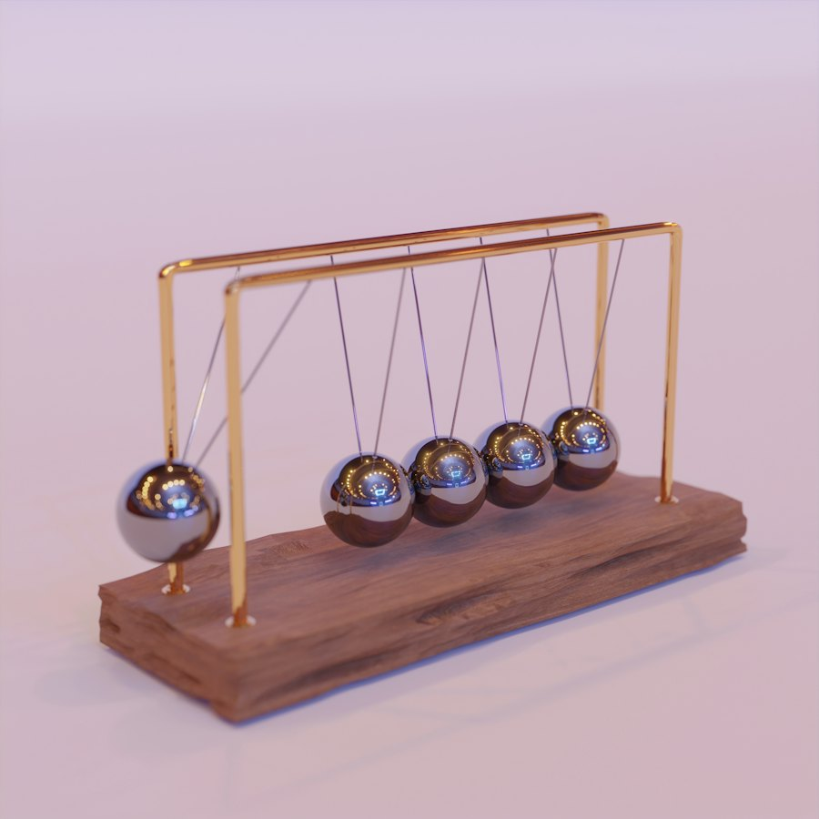
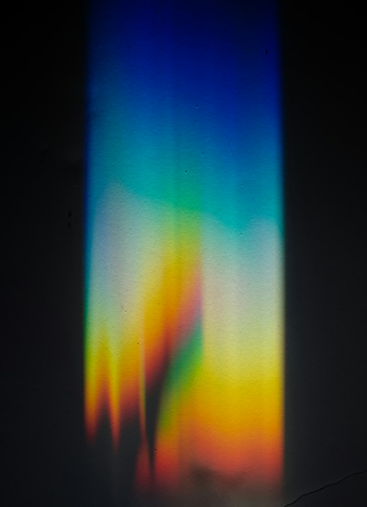

Un resumen por tema, organizado en los 3 bloques del temario, con ejercicios de examen reales resueltos y fuentes (libro + página) en cada bloque. Libro oficial: Sears-Zemansky, Física Universitaria (vol. 1).

